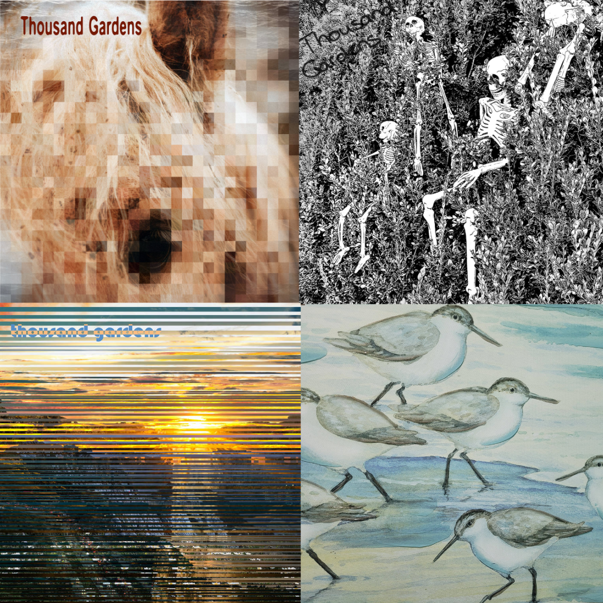
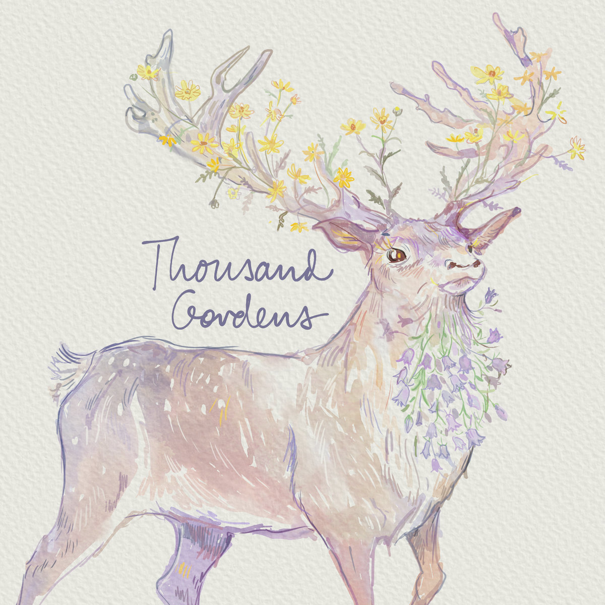

A Path Unclear

The second Thousand Gardens album, A Path Unclear, is an evolution of sound compared to Overgrowth.
Released in May, 2024
Singles pre 2025
Prior to 2025, I released 5 singles which didn't feel like they fit well with other work. Plovers was the first track I completed as Thousand Gardens, and while it's clearly an early work, I still appreciate it as an indicator for how my early sound was developing. It's more ambient-styled than much of my later work but grows and gently evolves.
Sunburst includes a B-side, with the main track Sunburst being evocative and upbeat, while "Walking Through" is darker in style with a shuffling rhythm underpinning the melodies. While both are songs I like, they didn't fit into the general theme of Overgrowth and so came out as a single shortly after.
Palomino was similar, as the vocals pushed it out of "A Path Unclear" and while the swirling melodies and broken beat may have fit, ultimately it didn't make the cut.
Finally, A Little Scared Dub was a personal challenge as a Halloween song. One of my favorite albums has been the series of EPs from Tino's Breaks, a Jack Danger project (of Meat Beat Manifesto), and his Halloween Dub album is a clear influence. I was particularly happy with truly all aspects of this song; it's dubby, it's spooky, full of samples that fit together with the spooky vibe. And the cover pulls it together for me, a picture I took that Halloween season that I modified. Best part is that it hasn't been taken down from streaming etc despite the samples.
Overgrowth

The first Thousand Gardens album, Overgrowth explores the ideas behind the unexpected pushing forth in unknown ways. It's not as experimental as that, though, as it references early IDM influences throughout with tracks ranging from mellow (Zizia, Orpine) to harsh (Overgrowth). Early experiments in sounds turned into songs and tracks; samples cut up or used straight while keeping instrumental electronic interesting.
Released in September, 2023